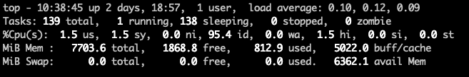
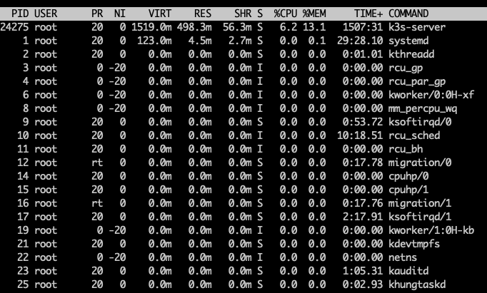

linux 命令大全
分为文件操作、网络管理、系统管理、进程管理、安全性来归纳linux基本使用
1. 文件操作
文件权限
1 | |
1 | |
解压、压缩
1 | |
参数说明
- -v 显示指令执行过程。
- -c 建立新的备份文件。
- -f 指定备份文件。
- -z 通过gzip指令处理备份文件。
- -x 从备份文件中还原文件。
加密压缩
1 | |
分割解压压缩
1 | |
内存、cpu、io
内存
- 输入
top命令，按下M键可以按照内存使用量进行排序。 - 查看内存使用最多的5个进程
1 | |
CPU
- 输入
top命令，按下P键可以按照内存使用量进行排序。 - 查看CPU使用最多的5个进程
1 | |
IO
请注意，iotop 和 pidstat 可能需要先安装，在终端输入以下命令可以安装它们：
1 | |
iotop
iotop 命令可以 实时 显示系统中进程的磁盘IO使用情况。打开终端并输入 iotop 命令，然后按下O键可以按照IO使用量进行排序。按q可以退出iotop 命令pidstat
pidstat 命令可以显示特定进程的IO使用情况。输入以下命令来查看IO使用最多的5个进程：1 | |
iostat
iostat 命令可以提供关于系统设备和分区的IO统计信息。输入以下命令来查看整个系统的IO情况：1 | |
设备名称：显示连接到系统的硬盘和存储设备的设备名称。
tps（Transactions Per Second）：每秒处理的 I/O 事务数。
kB_read/s 和 kB_wrtn/s：每秒从设备读取和写入的数据量（以 KB 为单位）。
kB_read 和 kB_wrtn：自系统启动以来已经读取和写入的总数据量（以 KB 为单位）。
kB_read/s 和 kB_wrtn/s：每秒从设备读取和写入的数据量（以 KB 为单位）。
svctm（Service Time）：每个 I/O 操作花费的平均时间。
%util：设备使用率的百分比，即设备每秒钟的 I/O 请求占总容量的百分比。
top
前五行

1. 输出系统任务队列信息
10:38:45：系统当前时间
up 2days 18:57：系统开机后到现在的总运行时间
1 user：当前登录用户数
load average: 0.10, 0.12, 0.09：系统负载，系统运行队列的平均利用率，可认为是可运行进程的平均数；三个数值分别为 1分钟、5分钟、15分钟前到现在的平均值；单核CPU中load average的值=1时表示满负荷状态，多核CPU中满负载的load average值为1*CPU核数
2. 任务进程信息
total：系统全部进程的数量
running：运行状态的进程数量
sleeping：睡眠状态的进程数量
stoped：停止状态的进程数量
zombie：僵尸进程数量
3. CPU信息
us：用户空间占用CPU百分比
sy：内核空间占用CPU百分比
ni：已调整优先级的用户进程的CPU百分比
id：空闲CPU百分比，越低说明CPU使用率越高
wa：等待IO完成的CPU百分比
hi：处理硬件中断的占用CPU百分比
si：处理软中断占用CPU百分比
st：虚拟机占用CPU百分比
4. 物理内存信息
以下内存单位均为MB
在 top 命令界面上，可以按下 e 键来进入设置界面，然后按下 E 键来切换内存单位为 GB。你可以在 top 的设置界面中选择其他显示选项，按需进行更改。
在设置界面中，你也可以使用 W 命令将当前的设置保存为个人配置文件，以便下次启动 top 时自动应用这些设置。
total：物理内存总量
free：空闲内存总量
used：使用中内存总量
buff/cache：用于内核缓存的内存量
5. 交互区内存信息
swap 分区通常被称为交换分区，这是一块特殊的硬盘空间，即当实际内存不够用的时候，操作系统会从内存中取出一部分暂时不用的数据，放在交换分区中，从而为当前运行的程序腾出足够的内存空间。
total：交换区总量
free：空闲交换区总量
used：使用的交换区总量
avail Mem：可用交换区总量
进程列表

PID：进程号
USER：运行进程的用户
PR：优先级
NI：nice值。负值表示高优先级，正值表示低优先级
VIRT：占用虚拟内存，单位kb。VIRT=SWAP+RES
RES：占用真实内存，单位kb
SHR：共享内存大小，单位kb
S：进程状态（I=空闲状态，R=运行状态，S=睡眠状态，D=不可中断的睡眠状态，T=跟踪/停止，Z=僵尸进程）
%CPU：占用CPU百分比
%MEM：占用内存百分比
**TIME+**：上次启动后至今的总运行时间
COMMAND：命令名or命令行
使用方法
更换内存单位
在 top 命令界面上，可以按下 e 键来进入设置界面，然后按下 E 键来切换内存单位为 GB。你可以在 top 的设置界面中选择其他显示选项，按需进行更改。
在设置界面中，你也可以使用 W 命令将当前的设置保存为个人配置文件，以便下次启动 top 时自动应用这些设置。
磁盘
du
直接输入 du 没有加任何选项时，则 du 会分析当前所在目录里的子目录所占用的硬盘空间。
选项与参数：
-a ：列出所有的文件与目录容量，因为默认仅统计目录底下的文件量而已。
-h ：以人们较易读的容量格式 (G/M) 显示；
-s ：列出总占用量；
-S ：不包括子目录下的总计，与 -s 有点差别。
-k ：以 KBytes 列出容量显示；
-m ：以 MBytes 列出容量显示；
1 | |
df
显示系统中每个文件系统的磁盘使用情况
1 | |
lsblk
显示系统中所有的块设备，包括硬盘和分区。通常，系统盘的挂载点是根目录 /，而数据盘则可能挂载在其他目录上，如/home、/mnt等。
1 | |
显示所有在启动时挂载的文件系统，包括系统盘和数据盘的信息。一般情况下，系统盘的挂载信息会在此文件中。
1 | |
fdisk
列出所有分区信息
1 | |
mount
目的：向linux系统新增一块硬盘，并挂载到指定目录。
- 进入设备分区
lsblk 查看对应的磁盘名称，比如为 vdb。
1 | |
进入交互终端后，使用 n 命令创建新分区。根据提示，选择主分区类型（p）。
提供分区号。
提供新分区的结束位置。输入 +250G 以指定分区大小为250GB。默认为全部。
使用 p 命令确认分区表是否正确。
使用 w 命令保存新的分区表。
格式化分区
1 | |
- 创建两个挂载点。运行以下命令：
1 | |
- 挂载分区
1 | |
- 开机自动挂载
1 | |
命令行快捷键
请注意，某些快捷键可能会因终端和操作系统的不同而有所差异。
| 快捷键 | 操作 |
|---|---|
| Ctrl + 左右键 | 在单词之间跳转 |
| Ctrl + a | 跳到本行的行首 |
| Ctrl + e | 跳到页尾 |
| Ctrl + u | 删除当前光标前面的文字 （还有剪切功能） |
| Ctrl + k | 删除当前光标后面的文字 （还有剪切功能） |
| Ctrl + L | 进行清屏操作 |
| Ctrl + y | 粘贴 Ctrl+u 或 Ctrl+k 剪切的内容 |
| Ctrl + w | 删除光标前面的单词的字符（以空格隔开的字符串） |
| Alt + d | 由光标位置开始，往右删除单词，往行尾删 |
| Ctrl + r | 搜索执行过的命令 |
| ! + 字符 | 快速执行最近执行过的命令，其中包含该字符 |
| history | 显示部分历史命令 |
2. 网络管理
端口查看
netstat
netstat、lsof、nmap可能漏掉某些端口，最直接的就是使用 curl 或者 telnet。
1 | |
参数说明:
-n 将字母转化为数字
-p 显示进程相关信息
-l 列出状态为监听
-t 只查看tcp协议
-a 查看全部协议(netstat -an)
lsof
1 | |
telnet
1 | |
路由
查看默认路由表信息
1 | |
查看路由表信息
1 | |
查看走哪条路由
1 | |
路由追踪
1 | |
网速测试
安装
1 | |
执行 speedtest-cli
1 | |
- MB：字节
- Mbit：比特
1 字节 = 8 bit，所以 1MB/s = 8Mbit/s。
下载网速为 1MB/s ，这里指的是网速每秒可以下载1M。
快速开启http服务
这将监听本地 80 端口，响应 OK
1 | |
3. 进程管理
4. 系统管理
cronjob 定时任务
1 | |
5. 安全性
更换密码
1 | |